Linh vật 2 vườn mới (bản chờ duyệt)
Cùng họ với Sen Sen ở ao: linh vật canh nước của vườn, phong cách Pop. Đạo cụ nhận diện theo môn: quyển sách = Tiếng Việt, cờ nhỏ = Tiếng Anh. Hàng dưới: 40px và 96px trên nền cảnh vườn. Chỉ có skin Mặc định.

